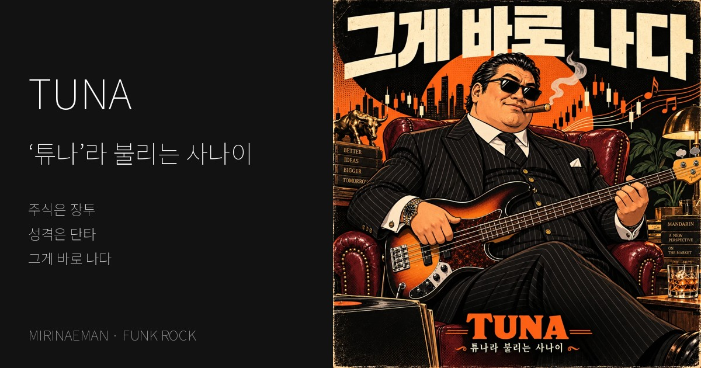

FUNK ROCK · WEBTOON · IMAGE CINEMA
‘튜나’라 불리는 사나이
주식은 장투 성격은 단타 — 튜나의 엉뚱한 자기소개를 신나는 슬랩 베이스 펑크록과 열두 컷 웹툰 그리고 이미지 시네마로 만난다
노래와 창작 · 미리내맨

폼은 대부 — 발끝은 둠칫
검은 선글라스에 시가를 문 근엄한 사나이 — 하지만 한번 꽂히면 잠을 못 자고 양을 세다 목장부터 구상합니다.
주식투자와 만다린에 대한 아이디어 그리고 멈추지 않는 호기심을 위트 있는 자기소개로 풀었습니다.
그게 바로 나다
심장을 두드리는 슬랩 베이스와 신나는 펑크록 위로 엉뚱한 자랑이 이어집니다.
말끝마다 돌아오는 “그게 바로 나다”가 튜나의 익살스러운 명함이 됩니다.
같은 사나이를 만나는 세 가지 시간
3분 19초의 원곡을 일곱 장면의 독립 원화로 만든 이미지 시네마와 함께 듣습니다.
열두 컷 웹툰은 각자의 속도로 세로로 이어 읽을 수 있고 가사는 따로 살펴볼 수 있습니다.
자막은 켜고 끌 수 있으며 줄 수가 바뀌어도 자막 영역의 높이를 유지합니다.
음악 · mirinaeman / Suno로 제작
원화 · AI 생성 이미지
이어지는 작품
나사가 많이 남았다 | The Mirinaeman Project Music Album
일상 속 작은 집착이 코믹한 노래가 되는 이야기로 이어집니다
나사가 많이 남았다 | The Mirinaeman Project Music Album 감상하기 ↗
공냥이,
시대를 쓰다
한 사람의 특징과 삶의 이야기가 주제곡이 된 또 하나의 작품입니다
창작노트에서 노래와 이미지 사이의 관계를 더 읽을 수 있습니다